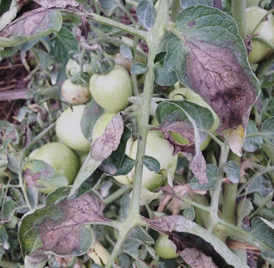
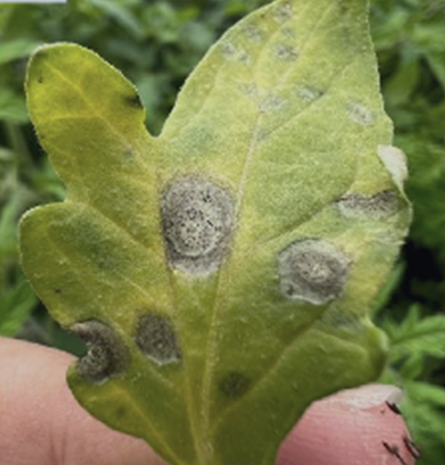
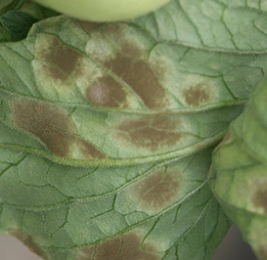
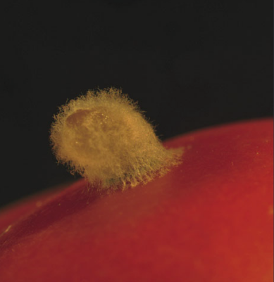
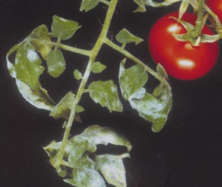

Necrotic rings on tomato leaves

Early Blight
Water soaked chlorotic spots that progress to necrotic lesions

Late Blight
Brown lesions on tomato leaves with visible black pycnidia

Septoria Leaf Spot
Patches of white to olive green mold on the backside of a tomato leaf

Leaf Mold
Patches of grey/brown fungal structures

Gray Mold
Patches of white fungal growth on the top of tomato leaves

Powdery Mildew